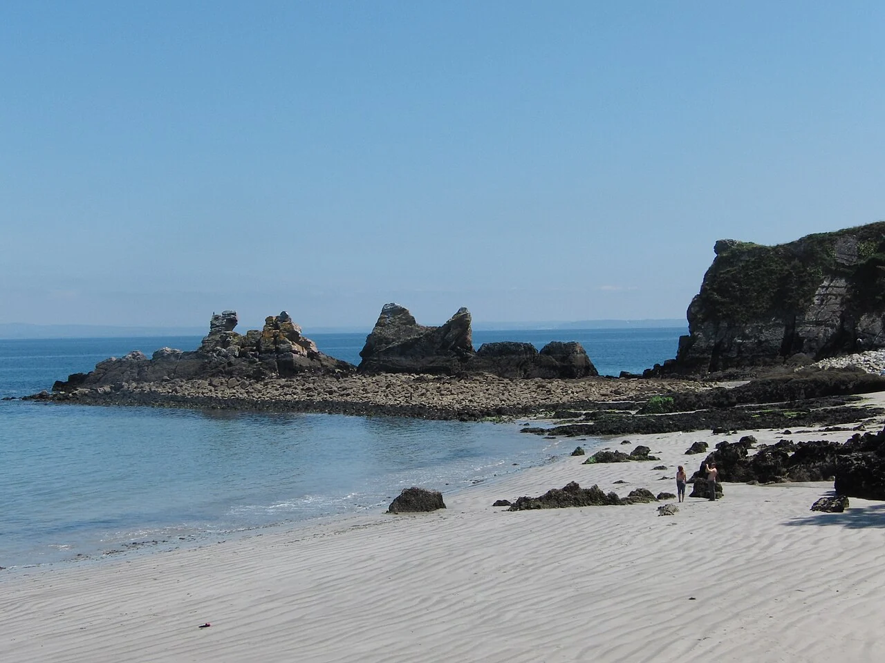

Morgat
Presqu’île de Crozon, France · kayak, paddle

La plage de Morgat s’étire au fond d’une baie de la presqu’île de Crozon. Depuis le village, les sorties en kayak suivent un littoral de falaises et de criques.
- Lieu
- Presqu’île de Crozon, France
- Niveau
- Variable selon les conditions
- Activités
- kayak, paddle
- Type d'eau
- Mer / océan
- Coordonnées
- 48.23, -4.50 (position approximative du secteur)
Ouvrir dans Ocean Buddy Télécharger sur l'App Store
Source : Crozon Bretagne.